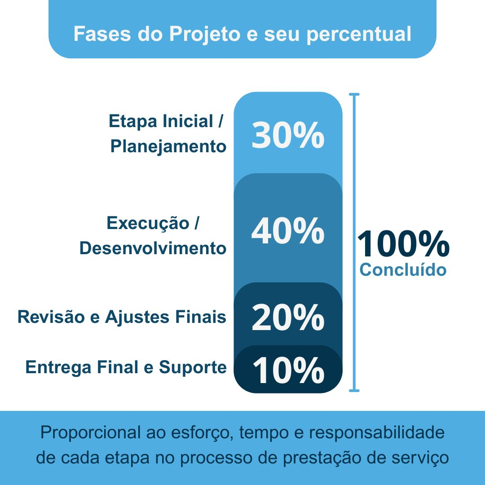

Para garantir clareza e justiça no processo de prestação de serviço, definimos a seguinte estrutura com base no esforço proporcional de cada etapa:
1. Etapa Inicial / Planejamento | 30%
Entendimento do pedido
Pesquisa e referências
Plano de ação e escopo
Alinhamento com o cliente
Definição de cronograma
Mesmo em caso de cancelamento nesta fase, o valor referente à análise e planejamento será retido.
2. Execução / Desenvolvimento | 40%
Produção do serviço contratado
Ajustes durante o andamento
Se houver desistência nesta fase, o valor retido será proporcional ao progresso realizado.
3. Revisão e Ajustes Finais | 20%
Apresentação do prévio
Recebimento de feedback
Aplicação de ajustes finais
Cancelamentos nesta fase acarretam retenção de até 90% do valor total acordado.
4. Entrega Final e Suporte | 10%
Entrega dos arquivos e acessos
Suporte básico ou orientações
Encerramento formal do projeto
Com o projeto concluído, o valor integral é devido.
Resumo de Retenção em Caso de Cancelamento:
Durante o planejamento: 30% retido.
Durante a execução: 70% retido.
Durante a revisão: 90% retido.
Após a entrega: 100% do valor é retido pelo fato da conclusão do acordo.

Valores excedentes aos retidos serão reembolsados para a conta do contratante.
Base Legal
Esta prática está respaldada pelo Código Civil Brasileiro:
Art. 599: “Se for resolvido o contrato antes do início da execução do serviço, pagar-se-á metade da retribuição pactuada, se outra coisa não se ajustou.”
Art. 475: “A parte lesada pelo inadimplemento pode pedir a resolução do contrato, com perdas e danos.”
Art. 607: “Se a prestação de serviço for ajustada por certo prazo, presume-se onerosa a avença, e não poderá o prestador abandoná-la, nem o contratante dispensar o prestador, antes de terminado o prazo, sem justa causa.”
Art. 389 (Código Civil): “O devedor que não cumprir a obrigação nos termos ajustados fica sujeito ao pagamento de perdas e danos, salvo se provar que o inadimplemento se deu por motivo de força maior.”
Art. 523 (Código de Processo Civil): “Não cumprida a obrigação, o credor poderá exigir o cumprimento específico da obrigação ou o pagamento por quantia certa, com a incidência de multa, juros e correção monetária, independentemente da notificação prévia.”
Art. 422 (Código Civil): “Os contratantes são obrigados a guardar, assim na conclusão do contrato, como na sua execução, os requisitos de boa-fé e os deveres de probidade.”
Esses artigos asseguram que o prestador seja remunerado proporcionalmente ao serviço já realizado, especialmente quando existe um prazo acordado para a entrega. O tempo dedicado e reservado para o projeto também faz parte do valor do serviço.